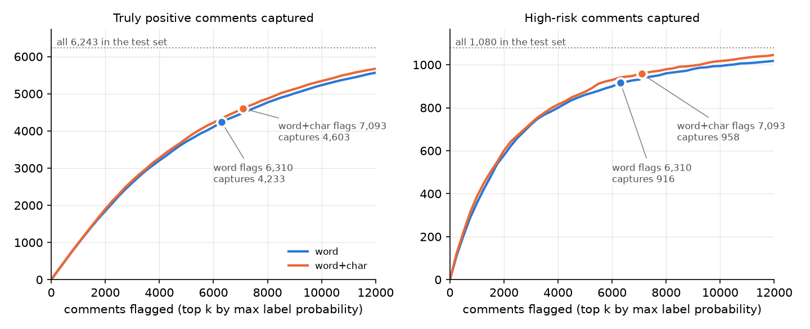

误报人工复核与字符 n-gram
第二步发现自动处置在测试集上的精确率是 0.904，达不到 0.99。这一步调查标注口径和拼写变体两种可能的解释：人工复核部分误报，并比较字符 n-gram 特征。两项检查都不能单独确认首轮差距的原因。
为什么做这一步
第二步的诊断留下两个调查方向。词典命中后被标为 toxic 的比例，选择集是 0.76，测试集是 0.51；这可能涉及评论内容或标注口径差异，不能直接证明测试集标注更宽松。测试集的 OOV 比例约是选择集的两倍，提示可以尝试字符特征，但尚不能说明拼写变体造成了多少误报。
这一步开始时项目仍采用首轮设计，自动处置层要求 0.99。做到一半，第三步把设计改成了全部人工确认，所以字符特征又在 v2 下重新比较了一次。两组结果都保留，读的时候要分清它们回答的是哪个设计下的问题。
误报人工复核
从首轮自动处置的 204 条误报里，按“是否命中固定词典”和“是否有其他标签为真”分层，按比例抽了 100 条。误报的定义与门槛一致：进了自动处置层，但触发它的标签在测试集里是 0。
| 分层（词典命中 / 其他标签为真） | 总体 | 样本 |
|---|---|---|
| lex/none | 133 | 65 |
| nolex/none | 64 | 31 |
| lex/other | 5 | 3 |
| nolex/other | 2 | 1 |
先由 Claude 按一条写明的规则预读，再由项目负责人逐条读完，只在不同意的地方改判。这是看过预读结果的单人复核，不是独立标注者之间的一致性检验。判定规则：
- toxic：攻击了某个人或群体，明说、讽刺、影射或针对读者的反问都算。
- borderline：粗口或无礼，但没有人被攻击，自嘲和引用也算这一类。
- clean：没有冒犯内容。
人工改判了 11 条，方向有两种：讽刺和影射被改成 toxic，只是喊名字或只是提到身份词被改成 clean。
改判的 11 条
| 文本 | 预读 | 人工 | 备注 |
|---|---|---|---|
| == gay == are you gay? | borderline | clean | Might be just a question |
| Alexhead8835 SHUT UP >:( | borderline | clean | |
| :Your timing sucks. | borderline | toxic | You |
| Then you stop messing around with my pag4e. I like the Civil War, and I don't want you and your stupid puffin… | borderline | toxic | |
| == hey == u gay bro. | toxic | clean | |
| You just inserted someone else's crap? | borderline | toxic | |
| WHAT THE HELL Justin | borderline | clean | |
| Cool story bro'. What the fuck does it have to do with anything? | borderline | toxic | |
| == what the hell? == why did you delete my edit! I WAS EXPRESSING MY OPINION!! YOU ARE RACIST!!! | borderline | toxic | |
| ==Stop the stupid edit wars== Seriously, decide what it says, and just keep it. Stop freaking changing it bac… | borderline | toxic | |
| ..why are you acting dumb?? | borderline | toxic |
最终结果：toxic 46，borderline 23，clean 31。
下面是条件敏感性估计，不是重标后的正式测试成绩：假定未复核的原真阳性仍然正确，把样本中的未加权比例外推到全部原误报。原始 Jigsaw 标签保持不变；这批历史自动处置误报也不是当前人工审核价值的独立评估集。
| 假设口径 | 条件估计的自动处置精确率 | 近似 95% 区间 |
|---|---|---|
| 按测试集标签 | 0.904 | |
| 假定判为 toxic 的原误报应算正确 | 0.948 | [0.939, 0.958] |
| 假定 toxic 和 borderline 都应算正确 | 0.970 | [0.961, 0.978] |
在上述假设下，要达到 0.99，2,125 条自动处置里最多只能有 21 条误报，换算到样本上至少要有 90 条被改计为正确。实际判为 toxic 的有 46 条，合并 borderline 也只有 69 条。区间由 Wilson 区间近似换算，未计入分层抽样、有限总体修正或人工判断的不确定性，不能视为完整的不确定性估计。
标签质量疑点与研究依据
2026-09-23 补充。Daniel Borkan 等，Jigsaw，2019：Nuanced Metrics for Measuring Unintended Bias with Real Data for Text Classification。中文题意为“利用真实数据细致衡量文本分类中的非预期偏差”。发表于 WWW 2019 Companion，DOI。
论文提供的依据
论文指出，毒性判断复杂且带有主观性；标注者偏见、用户构成和样本选择都可能造成模型学到不当关联。作者明确承认，跨群体的可靠测试标签是重要前提，并非所有应用都满足。这支持检查标签与抽样过程，不能直接证明本项目某条标签错误。见第 1 节。
论文的三个 AUC 指标不依赖某个固定阈值。这里的群体指评论所提及的身份群体，背景是该群体之外的评论；阳性和阴性均按评估标签划分。见第 3.1 节。
| 指标 | 比较哪些样本 | 低值提示什么 |
|---|---|---|
| Subgroup AUC | 群体内部的阳性与阴性 | 群体内部的区分能力较弱 |
| BPSN AUC | 背景阳性与群体阴性 | 群体阴性相对背景阳性被排得过高，可能导致误报 |
| BNSP AUC | 背景阴性与群体阳性 | 群体阳性相对背景阴性被排得过低，可能导致漏报 |
它们检查模型排序与标签的关系，不能单独鉴定标签质量，也不等于某个阈值下的 FPR 或 FDR。论文第 4.4 节还保留了标注者“难以判断”的选项，提醒我们不要把所有分歧都当成确定的标错。
与本项目的关系
本项目怀疑标签不足以支撑当前任务，有两类本地依据。第一，已有误报审计中，46 条被复核为 toxic、23 条为 borderline，说明原标签与本次判定口径存在分歧；但样本只来自历史误报，且由看过预读结果的一人复核，无法估计全测试集的标签错误率。第二，“值得送人工审核”与“已有毒性阳性标签”并不等价：含糊或需要语境的评论可能值得送审，最终却没有确认违规。这属于评估目标与标签含义的差异，不一定是原标签标错。
论文使用了另行构建、带身份标注的真实评论数据，不能把它的结论直接套到本项目的 Jigsaw 2018 测试行。当前身份词匹配只是代理分组，并不等同于论文的人工身份标注。
字符 n-gram 改了什么
模型配置新增 model.analyzer：word 是原来的词级 TF-IDF；char_wb 是词边界内的 2 到 5 字符片段；word+char_wb 把两组特征并排。下游的六个逻辑回归、Platt 校准、阈值选择和路由都不变。对比用的配置只在这几行上与 baseline 不同。
首轮设计下的结果
这三次运行来自未提交的工作区（20260922T131503586656Z-baseline, 20260922T144755110181Z-char-ngram, 20260922T145018681873Z-word-char），数字可以从保存的运行目录复算，但不能从某个提交完整重现。
| 运行 | 特征 | 自动处置精确率 | 95% 区间 | 条数 | 选择集精确率 | 人工层精确率 | 条数 |
|---|---|---|---|---|---|---|---|
| baseline | word | 0.904 | [0.891, 0.916] | 2,125 | 0.992 | 0.551 | 4,185 |
| char-ngram | char_wb | 0.898 | [0.886, 0.909] | 2,514 | 0.990 | 0.511 | 4,420 |
| word-char | word+char_wb | 0.907 | [0.895, 0.918] | 2,460 | 0.992 | 0.511 | 4,633 |
| 标签 AP | baseline | char-ngram | word-char |
|---|---|---|---|
| toxic | 0.752 | 0.774 | 0.780 |
| severe_toxic | 0.311 | 0.309 | 0.319 |
| obscene | 0.773 | 0.789 | 0.796 |
| threat | 0.458 | 0.454 | 0.504 |
| insult | 0.696 | 0.724 | 0.731 |
| identity_hate | 0.480 | 0.560 | 0.562 |
排序在大部分标签上变好，identity_hate 提升最多，但自动处置的精确率区间互相重叠，没有一个接近 0.99。配对来看，word+char 去掉了基线 204 条误报中的 62 条，同时新放进 517 条，其中 87 条是新误报。人工复核里判为 clean 的行，word+char 仍送进自动处置的比例是 14/31。
v2 设计下的结果
两次运行都来自干净的提交 01897e45，配置只差特征。词特征这次运行与第三步那次运行的分层、队列精确率、各标签 AP 和模拟汇总完全相同；第三步那次来自未提交的工作区，这次说明它的结果可以从干净的提交复现。
分层与工作量
| 特征 | 层级 | 条数 | 测试精确率 | 95% 区间 | 选择集精确率 |
|---|---|---|---|---|---|
| word | priority_review | 4,625 | 0.763 | [0.750, 0.775] | 0.972 |
| word | human_review | 1,685 | 0.419 | [0.396, 0.443] | 0.797 |
| word+char_wb | priority_review | 5,030 | 0.756 | [0.744, 0.768] | 0.972 |
| word+char_wb | human_review | 2,063 | 0.387 | [0.366, 0.408] | 0.794 |
需要人工审核的评论从 6,310 条增加到 7,093 条（占全部评论 9.86% 到 11.09%），队列精确率从 0.671 降到 0.649。
召回：真阳性和高风险评论去了哪里
| 特征 | 标记 | 真阳性被标记 | 高风险被标记 | 高风险进优先档 | 高风险留在放行 |
|---|---|---|---|---|---|
| word | 6,310 | 4,233 / 6,243（67.8%） | 916 / 1,080（84.8%） | 838 / 1,080（77.6%） | 164 |
| word+char_wb | 7,093 | 4,603 / 6,243（73.7%） | 958 / 1,080（88.7%） | 874 / 1,080（80.9%） | 122 |
word+char 多抓到 370 条真阳性，留在放行里的高风险评论从 164 条降到 122 条。但它也多标记了 783 条。
相同标记量下的排序
为了把“排序更好”和“标记更多”分开，两个模型都按最大标签概率排序，取前 k 条，看抓到多少。

| k | word 真阳性 | word+char 真阳性 | 差 | word 高风险 | word+char 高风险 | 差 |
|---|---|---|---|---|---|---|
| 6,310 | 4,234 | 4,338 | +104 | 916 | 941 | +25 |
| 7,093 | 4,488 | 4,601 | +113 | 936 | 958 | +22 |
真阳性和高风险评论要分开看。word+char 多出的 370 条真阳性中，约 255 条只要让词模型也标记 7,093 条就能得到，剩下约 115 条来自排序，所以真阳性的提升大约七成来自多标记。高风险评论不一样：多出的 42 条里只有约 20 条来自多标记，一半以上来自排序。换成漏检的角度看，标记 6,310 条时，词模型漏掉 164 条高风险评论，word+char 漏掉 139 条，少了约 15%，多出的主要是 identity_hate。按最大概率排序与路由实际使用的分标签阈值不完全相同，这里是近似的分解；复核用路由本身重做，结果相差不到 3 条。
按标签看也是一样。在相同条数下，word+char 每个标签的精确率都更高：
| 标签 | word 的条数 | word+char 的条数 | word 在 word 条数 | word+char 在 word 条数 | word 在 word+char 条数 | word+char 在 word+char 条数 |
|---|---|---|---|---|---|---|
| toxic | 6,248 | 7,030 | 0.663 | 0.681 | 0.625 | 0.642 |
| obscene | 2,939 | 3,120 | 0.773 | 0.790 | 0.753 | 0.774 |
| insult | 1,130 | 1,346 | 0.879 | 0.906 | 0.848 | 0.894 |
word+char 在人工审核阈值处的条数更多，是因为同一条“选择集精确率 0.90”的规则，在排序更好的模型上会选出更多行。它不是一个可以随意调低的阈值：把词模型的阈值调到同样条数，toxic 和 insult 的精确率会跌破门槛。
队列：同等审核量
第三步报告里的模拟固定的是进入人工队列后的到达率，两个模型每小时收到同样多的审核任务。
| 特征 | 审核量/h | 危害代理值/人时 | 高危完成 | 高危未完成 | 高危等待 p90，分钟 |
|---|---|---|---|---|---|
| word | 108 | 50.47 ± 3.40 | 123.6 ± 17.4 | 0.2 ± 0.4 | 1.06 ± 0.08 |
| word | 180 | 70.24 ± 1.71 | 184.2 ± 5.6 | 22.8 ± 5.3 | 1.63 ± 0.31 |
| word+char_wb | 108 | 48.26 ± 2.36 | 118.8 ± 13.9 | 0.2 ± 0.4 | 1.29 ± 0.40 |
| word+char_wb | 180 | 67.62 ± 4.01 | 172.2 ± 22.5 | 19.6 ± 2.1 | 1.55 ± 0.59 |
这个口径下 word+char 略差。5 个种子分不出差别，但复核用 200 个种子重跑后，差距是系统性的，每人时处理的危害低 3% 到 5%：它的队列里每条评论的平均危害更低（1.79 对 1.88）。注意这个口径让 word+char 看到的评论流比词模型少约 11%，它回答的是“每个审核任务的价值”，不是“哪个模型在同样的评论上做得更好”。
队列：同等评论流量
更接近实际的比较是固定进来的评论流量。每个种子生成一条评论流，两个模型共用；每个模型只审核自己标记的评论，被它留在放行层的高风险评论算作未审核。流量取词模型在 60 / 108 / 180 条每小时审核量时对应的评论流量，200 个种子，按种子配对比较。下表是优先排序，均值 ± 样本标准差，数量按一个 8 小时班次计。
| 评论/h | 特征 | 审核任务 | 完成率 | 结束积压 | 危害处理/h | 高风险留在放行 | 高风险在队列未完成 | 高风险未审核合计 |
|---|---|---|---|---|---|---|---|---|
| 608 | word | 481 ± 21 | 1.00 ± 0.00 | 0.1 ± 0.3 | 113.0 ± 7.3 | 12.7 ± 3.6 | 0.2 ± 0.5 | 13.0 ± 3.6 |
| 608 | word+char_wb | 540 ± 22 | 1.00 ± 0.00 | 0.2 ± 0.7 | 120.9 ± 7.5 | 9.4 ± 3.1 | 0.2 ± 0.5 | 9.6 ± 3.1 |
| 1,095 | word | 865 ± 31 | 0.99 ± 0.01 | 4.0 ± 4.9 | 202.9 ± 10.8 | 22.5 ± 4.7 | 0.7 ± 0.8 | 23.2 ± 4.8 |
| 1,095 | word+char_wb | 973 ± 32 | 0.96 ± 0.02 | 32.1 ± 22.4 | 215.1 ± 10.3 | 16.7 ± 3.9 | 1.2 ± 1.1 | 17.9 ± 4.0 |
| 1,825 | word | 1440 ± 34 | 0.66 ± 0.02 | 480.6 ± 34.4 | 283.8 ± 9.9 | 36.7 ± 5.9 | 21.6 ± 4.7 | 58.4 ± 7.3 |
| 1,825 | word+char_wb | 1618 ± 36 | 0.59 ± 0.01 | 658.0 ± 35.6 | 292.7 ± 9.3 | 27.6 ± 4.9 | 25.5 ± 5.0 | 53.0 ± 6.8 |
| 评论/h | 排序 | 审核任务差 | 积压差 | 危害处理/h 差 | 高风险未审核差 |
|---|---|---|---|---|---|
| 608 | priority | +59 ± 1 | +0.1 ± 0.0 | +7.9 ± 0.2 | -3.3 ± 0.2 |
| 608 | fifo | +59 ± 1 | +0.1 ± 0.0 | +7.9 ± 0.2 | -3.3 ± 0.2 |
| 1,095 | priority | +108 ± 1 | +28.1 ± 1.5 | +12.2 ± 0.2 | -5.3 ± 0.2 |
| 1,095 | fifo | +108 ± 1 | +28.1 ± 1.5 | +7.8 ± 0.4 | -2.0 ± 0.3 |
| 1,825 | priority | +178 ± 1 | +177.4 ± 1.4 | +8.9 ± 0.3 | -5.4 ± 0.3 |
| 1,825 | fifo | +178 ± 1 | +177.4 ± 1.4 | -10.8 ± 0.3 | +9.7 ± 0.3 |
差值是 word+char 减词模型，± 为配对标准误。优先排序下，三个流量档位 word+char 都每小时处理更多危害，每个班次少漏 3.3 到 5.4 条高风险评论，因为它留在放行层的高风险评论更少。代价是审核量多约 12%：中间档位时它越过了 120 条每小时的容量，结束积压多 28 条。FIFO 排序在超载时结果反过来，高风险未审核反而多 9.7 条，所以这份收益依赖 v2 的优先排序。
回归门槛与成本
用 v2 的回归门槛检查两份报告：词特征 47 passed, 3 skipped in 1.30s；word+char 2 failed, 45 passed, 3 skipped in 1.36s。未通过的两项：
- toxic precision at the operating point degraded: 0.6420 < 0.6430 (was 0.6631)
- severe_toxic predicted volume overshoots the actual count by 107.6% (ceiling 100%, was 0.916)
- ...
这些分类回归门槛参照词模型的实测值设定：toxic 的下限是词模型的 0.663 减 0.02。word+char 的 toxic 读数低约 0.001，复核的重抽样里有 43% 会通过，说明这一项对抽样敏感；它在原报告中仍未通过。相同条数下的精确率更高，提示不能仅凭这一项把结果概括为分类整体变差。
severe_toxic 的预测量高估相对词模型更严重，复核的所有重抽样也都如此。这是本次数据上的聚合校准诊断，不能据此断言字符特征放大了训练集与测试集之间的阳性率差异。这两次运行中，该标签未通过自身阈值触发路由；现行回归门槛保持不变。
| 特征 | 完整运行耗时，秒 | 模型文件，MB |
|---|---|---|
| word | 29 | 17.6 |
| word+char | 170 | 42.4 |
独立复核
四个独立代理分别复核：一个不用对比脚本、直接从预测文件和报告重算所有数字；一个对同一批测试行做配对 bootstrap（5000 次）并评估模拟差异是否超出种子噪声；一个审查本分支的四个提交；一个逐条尝试推翻结论和建议。原始输出保存在 analysis/v2/verification_raw.json。
这里的独立复核指另外的代理重算和审查同一批结果，没有新增独立评估数据。以下保留复核意见；当前采用方案和后续安排以本页“结论与决定”为准。
重算
29 项检查中，所有计数和均值都与对比结果一致，包括两张模拟表的每一个格子。不一致的两项都是解读：真阳性“多数来自多标记”对高风险评论不成立；超载时 +3% 的危害处理量并不在噪声之内。
配对 bootstrap
两个模型给同一批测试行打分，所以按行做配对重抽样，比较 word+char 减去 word 的差值。区间以两个训练好的模型为条件，没有估计重新训练带来的方差。toxic 门槛只差 0.001，约 0.17 个标准误，43% 的重抽样会通过；severe_toxic 的高估相对词模型更严重，这一点在全部重抽样中都成立。
| 差值（word+char − word） | 点估计 | 95% 区间 |
|---|---|---|
| 相同标记量 k=6310：真阳性 | +104 | [+55, +153] |
| 相同标记量 k=7093：真阳性 | +113 | [+66, +160] |
| 相同标记量 k=6310：高风险 | +25 | [+10, +40] |
| 相同标记量 k=7093：高风险 | +22 | [+8, +36] |
| 各自阈值下标记的真阳性 | +370 | [+320, +422] |
| 各自阈值下标记的高风险 | +42 | [+26, +58] |
| 队列精确率 | -0.0219 | [-0.0288, -0.015] |
| 审核量相对增幅 | +0.1241 | [+0.1099, +0.1385] |
| toxic 人工审核阈值处精确率 | -0.0211 | [-0.0281, -0.0145] |
| severe_toxic 预测量高估 | +0.16 | [+0.1251, +0.1977] |
| 同等审核量 priority@180 每人时危害（去掉种子噪声后的期望） | -2.543 | [-3.436, -1.65] |
代码审查
- 同等评论流量的模拟没有计入被留在放行层的高风险评论，而且两个模型用的是独立的到达流。已改为公共随机数设计：每个种子一条共享评论流，放行层漏掉的高风险计为未审核，差值按种子配对。
- 审核脚本在子组阈值为空时回退到总体阈值，与流水线“该标签不能在子组内触发”的规则不一致。已修正；误报集合不变（仍为 204 条），样本中 1 行的触发标签显示从 toxic+obscene 更正为 toxic。
- 对比脚本按配置名存结果，同名运行会互相覆盖。已改为同名时自动附加运行时间。
- 对比脚本不检查策略文件是否一致。现在记录每次运行的策略哈希，不一致时给出警告。
- 人工判定只填了一部分时，对比脚本会悄悄改用预读结果。现在直接报错。
- 重抽保护只检查人工判定列，会覆盖已有的预读。现在两列都检查。
- 达标所需行数用了整数误报上限，与连续的精确率推算公式不一致。已统一为同一公式；本例结果仍是 90 条。
- 其余小问题：标题里写死“5 个种子”、两张表的标准差口径未注明、分母为零时崩溃、对首轮运行使用 --equal-input 的报错不清楚、样本分层数记录的是计划值、阳性口径不一致。均已修正。
对结论的反驳
- 相同标记量的排序提升：成立。从漏检角度更直观：相同标记量下高风险漏检少约 15%（k=6310 时 164 条降到 139 条），主要来自 identity_hate。
- 收益主要来自多标记：部分成立。对真阳性总数成立（约 69%）；对高风险评论不成立，一半以上的提升来自排序本身。
- 同等审核量下差异在噪声内：部分成立。5 个种子分不出，但 200 个种子下 word+char 每人时处理的危害系统性低 3% 到 5%，因为它的队列里每条评论的平均危害更低。这个口径下它看到的评论流也比词模型少约 11%，不能用来判断哪个模型更好。
- 同等评论流量下的收益：部分成立。“容量允许时才更好”和“超载时在噪声内”都不对。同一条评论流、优先排序下，三个流量档位 word+char 都每小时多处理危害，每班次少漏约 3 到 5 条高风险评论；代价是近容量时积压多约 28 条。FIFO 排序在超载时结果相反。
- 两项门槛不通过：部分成立。门槛是按词模型的实测值设的：toxic 的下限就是词模型 0.663 减 0.02。toxic 只差 0.001，在抽样误差内。severe_toxic 的高估相对词模型确实更严重，但它是校准诊断，不决定任何路由阈值。
- 建议：不采用，因为调低词模型阈值也能得到同样收益：论证被推翻。把词模型的阈值调低到同样的标记量，高风险只多抓约 17 到 20 条（word+char 多 42 条）。按标签在相同条数下比较，词模型在 word+char 的条数上 toxic、obscene、insult 的精确率是 0.625、0.753、0.848，其中 toxic 和 insult 低于门槛；word+char 在词模型的条数上是 0.681、0.790、0.906，三项都高于词模型自己的 0.663、0.773、0.879。暂不采用只能以成本、以及阈值和门槛需要重新设定为理由。反驳代理用另一种缩放阈值的方法得到 0.625、0.734、0.819，方向一致。
结论与决定
model.analyzer 开关留在代码里，默认值是 word。它有没有效果：有，但很小，而且集中在高风险评论上。相同标记量下，高风险漏检少约 15%，真阳性多约 2.5%，区间都不含 0。同一条评论流上，优先排序下每个班次少漏 3 到 5 条高风险评论。它没有解决第二步的问题：首轮设计下，自动处置精确率仍然在 0.90 左右。
为什么暂不采用：
- 成本高。完整运行时间约为 6 倍，模型文件约为 2.4 倍。这是单次运行的端到端时间，没有单独测每条评论的推理延迟。
- 审核量多约 12%。在接近容量的评论流量下，队列会越过容量开始积压。要兑现它的收益，需要更多审核人力，或者重新选择阈值。
- 还需要评估阈值与容量的取舍。候选的额外审核量和未通过的回归项尚未解决。若以后重启比较，应在开发数据上选择候选方案，另留独立数据评估，不能为了让候选通过而调整当前测试门槛。
- 证据只有一次训练、一份测试集。区间以这两个训练好的模型为条件，没有估计重新训练带来的方差。
之前的说法哪里不对：最初的判断是“收益主要来自多标记，把词模型阈值调低也能得到”。复核不支持把这句话用于高风险评论：相同标记量下仍有排序收益；把词模型阈值调到同样条数，高风险只多抓约 17 到 20 条，而且会让两项精确率门槛不通过。因此，本次保留 word 同时考虑了计算成本、审核容量和证据范围；字符特征在这些运行中的收益仍如实保留。
后续安排：当前继续使用 word，不启动新增独立数据采集或人工标注，也不修改现行门槛。独立数据验证仅保留为可选方向，暂缓且尚未启动。若以后决定开展，可再考虑是否将 word+char 纳入候选，并事先确定比较方法和验收要求。
后续考虑：独立人工评估集，暂缓
2026-09-23 记录。当前用“任一真实标签为阳性”近似衡量审核价值。对有歧义、需要结合语境判断的评论，即使人工最后确认没有违规，送审也可能合理；但缺少语境时，人工也可能无法判断。
后续可考虑建立独立评估集，覆盖优先审核、普通审核和放行，分别记录审核前是否值得送审、紧急程度与所需语境，以及审核后的结论、仍无法判断的情况和耗时。若开展，评估只提供实际可获得的语境，保留原始 Jigsaw 标签；已用于分析的审计样本作为开发案例，最终评估另用未参与调参的新样本。
状态：暂缓，尚未启动。新增抽样与独立人工标注的工作量较大，本次仅记录为后续可选方向，待资源允许时再决定是否开展。
如何复现
python scripts/audit_auto_action_fp.py --score analysis/auto_action_fp_audit
python scripts/run_pipeline.py --config configs/baseline.yaml
python scripts/run_pipeline.py --config configs/word_char.yaml
python scripts/compare_runs.py reports/<word run> reports/<word+char run> --equal-input --out analysis/v2
python record/collect_runs.py --features analysis
python record/render.pyv2 运行 20260923T074244236943Z-human-review-baseline 与 20260923T074315427980Z-word-char，commit 01897e454919，工作区干净。本页读取 features_run.json，它由 analysis/ 下的对比结果和人工复核结果汇总而来。